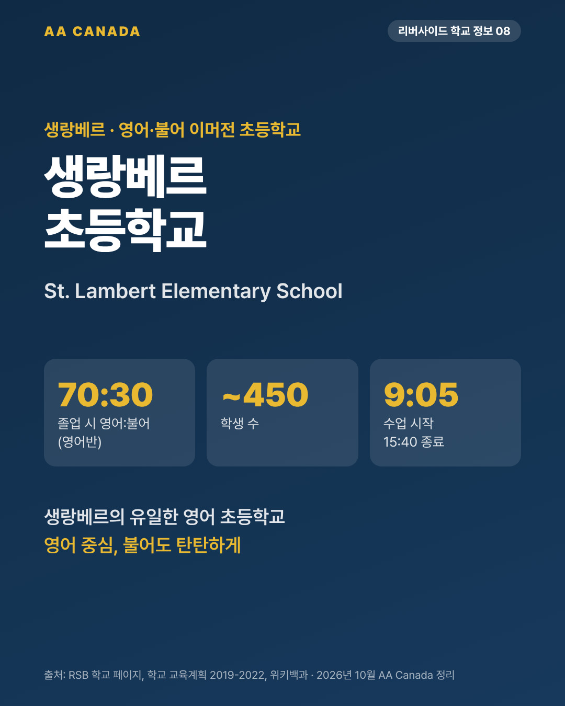

생랑베르 초등학교 (St. Lambert Elementary School)

기준일 2026-10-21 · AA Canada 정리
교육청 공통 정보는 리버사이드 교육청 공통 안내를 보세요.
한 줄 요약: 생랑베르의 유일한 영어 초등학교. 영어반은 졸업할 때 영어 70% / 불어 30%로, 영어 중심이면서 불어도 탄탄하게 배웁니다.
한눈에 보기
| 항목 |
내용 |
| 주소 |
81 Green Street, Saint-Lambert, QC J4P 1S4 |
| 연락처 |
450-671-7301 |
| 학년 |
유치원~6학년 (4세 유치원 영어반 운영, 2025-26 기준) |
| 학생 수 |
약 450명 |
| 수업 시간 |
9:05~15:40 |
| 데이케어 |
7:00~8:55, 15:30~18:00 (450-672-8166) |
| 프로그램 |
영어 프로그램 + 불어 이머전 (이머전은 K5부터) |
| 학군 |
생랑베르, 브로사드 일부, 롱괴이 일부 (자리 있으면 그 밖 지역도 가능) |
영어·불어 비중
| 반 |
비중 |
| 영어반 |
졸업 시 영어 70% / 불어 30% (학교 교육계획) |
| 영어반 학년별 (AA Canada 학교 방문 상담, 2021) |
1~2학년 영어 80%, 3~4학년 72%, 5~6학년 68% |
| 불어 이머전 반 |
졸업 시 불어 70% / 영어 30%, 5~6학년은 50/50 |
- 학생 구성(2019-2022 교육계획): 이머전 79%, 영어반 21%.
학교 특징
- 커뮤니티 러닝 센터(CLC)가 점심·방과후 활동을 운영합니다.
- 아침 9:05 시작, 오후 3:40 종료로 늦게 시작하는 학교입니다. 데이케어가 아침 7시부터 열립니다.
- 참고: 1965년 캐나다 최초의 불어 이머전 실험은 생랑베르의 다른 학교(Margaret Pendlebury)에서 했습니다. 이 학교와 혼동하지 마세요.
AA Canada 코멘트: 이런 가족에게 추천
- 영어를 중심으로 하되 불어도 꽤 배우고 싶은 가족. 굿셰퍼드(불어 16%)보다 불어 비중이 높습니다.
- 조용한 주택가를 원하는 가족. 생랑베르는 몬트리올 시내와 다리 하나 사이의 오래된 주택가입니다.
- 같은 동네에 생랑베르 인터내셔널 고등학교가 있어 초등→고등을 이어서 계획하기 좋습니다.
출처
- RSB 학교 페이지: https://www.rsb.qc.ca/school/st-lambert-elementary/
- 교육계획: https://www.rsb.qc.ca/wp-content/uploads/2020/12/Final-St-Lambert-Educational-Project-2019-2020-1.pdf
- 위키백과: https://en.wikipedia.org/wiki/St._Lambert_Elementary_School
- RSB Programs & School Zones 2025-26
- AA Canada 학교 방문 상담 자료(2021)